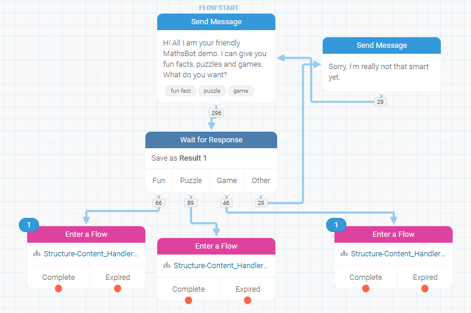
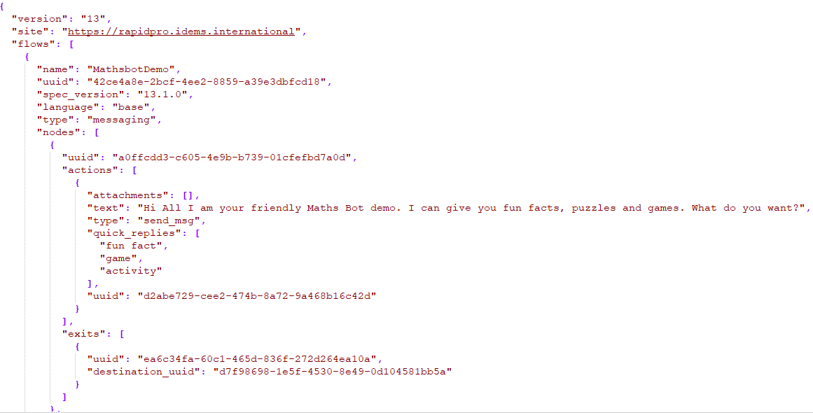

Chatbot
The Virtual Maths Camp (VMC) Chatbot is an automated messaging system designed through RapidPro, which provides a range of puzzles, games, and interesting Maths facts.
We are creating a chatbot that can be accessed in multiple platforms such as telegram, whatsapp and Facebook Messenger. Currently the bot can be accessed on Telegram, further platform implementations are in development. Interactive activities within the platform will also be intergrated in the future.
If you love the Chatbot and would like to share your feedback, get involved in developing/improving the bot further, or have any other ideas which you would like to share, please get in touch with us! Simply send an email to contactus@virtualmathscamp.com and we will get back to you.
How to access the VMC Chatbot:
-
You will need to install Telegram App on your mobile device or computer. Go to Google play or App store and search for "Telegram". You can also click this icon
 to install the app. (Telegram can also be used directly on your browser without needing to install it.
to install the app. (Telegram can also be used directly on your browser without needing to install it.
- Create an account and sign in.
- Search for the channel @Virtual_Mathscamp_bot. Or click this link: Virtual_Mathscamp_bot
-
To start interacting with the bot, type the trigger word "mathscamp". Once entered, the user will be given the possibility to select any of the following resources:
- Puzzles: short riddles with numeric answer which can be assessed by the system
- Fun facts: interesting maths-related curiosities that could lead to an activity
- Games: instructions on how to play, so that users can do it on their own
- Select any of the 4 choices and explore….Have fun while at it. 🙂
Below is a visual example of accessing one of the puzzles in the chatbot:

How to help build chatbot flows:
RapidPro is an Open Source platform to build interactive messaging systems launched by UNICEF in 2014. At the core of RapidPro are the messaging “flows”, flowcharts that can be built using an easy visual interface and that define how users interact with the system. Each “node” in the flow represents an interaction and by drawing arrows from one node to another, one defines how users will move through the flow based on their responses. Here is how the flow that handles the interaction with the users after they type “mathscamp” in the chatbot looks like:
Creating RapidPro flows through the graphical interface is easy to learn and no technical experience is needed to support this aspect of building the chatbot.
How to help build RapidPro pipelines:
With the aim of having a one-to-one correspondence of the content in the chatbot, card deck and website we also went beyond the visual interface and had a look at what happens under the hood in RapidPro. In the backend, flows are represented in a JSON format, where the logic given by the arrows is stored using unique IDs that identify each node as well as each of its exits.
We therefore created a pipeline that, starting from a common google doc containing the conceptualisation of an activity (puzzle, game of fun fact), is able to convert its content into a format that can be ingested into the chatbot, card deck or website on demand. In the case of the chatbot, the pipeline is able to generate the JSON representing a flow, which can then be imported to RapidPro.
Some basic programming skills are required to get involved in this more technical side of the project.